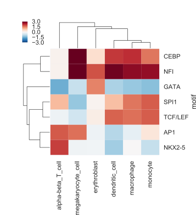
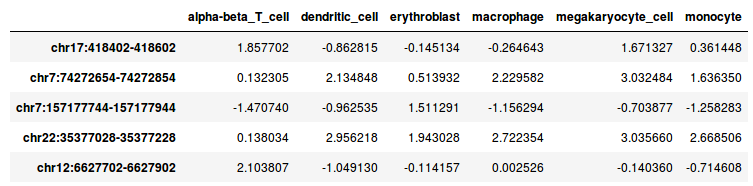

Motifs in DNase I peaks
13. Motifs in DNase I peaks#
Note
This exercise is optional!
Exercise 13.1
The exercise for this week is to compare the relation between transcription factor motif presence and DNase I signal in different cell types.
The result of your code should be a figure like the following (the values here are not real, but only shown for illustrative purposes):

This heatmap shows, for every cell type and motif combination, the difference of the mean signal for regions with a motif compared to regions without a motif.
Data
In the directory /content/gdrive/MyDrive/CFB_2022/dnase you will find two files:
DNase_table.tsvmotifs.txt
The file DNase_table.tsv looks like this:

This tab-separated file contains DNase I signals for six hematopoietic cell types in 10,000 genomic regions. The DNase I reads were counted, log2 transformed and normalized by scaling.
The file motifs.txt contains the name and consensus sequence for seven motifs.
Use the shell command wget to download UCSC Genome Browser’s hg38 human reference sequence. Note that this is a gzip archive (.gz) of the file hg38.fa. Use gunzip to extract hg38.fa from the archive:
!wget http://hgdownload.soe.ucsc.edu/goldenPath/hg38/bigZips/hg38.fa.gz
!gunzip hg38.fa.gz
You now have hg38.fa in your Google Colab /content folder. Recall that this folder is temporary and will be cleared in a few hours. You can always re-download the file, or you can save it in your Google Drive. However, this file is ca. 3 Gb, so make sure you have enough space on your Google Drive if you choose to save it.
Retrieving sequences from a genome FASTA file.
You can use the pyfaidx module to retrieve specific sequences from a FASTA file based on genomic coordinates. See the documentation of the module here.
First, you create a FASTA object.
!pip install pyfaidx
from pyfaidx import Fasta
genome = Fasta("hg38.fa")
Then, you can retrieve sequences in a dictionary-like approach.
my_seq = genome["chr2"][5000000:5000020]
print(my_seq.seq)
TCATGACCATAGAGAACAGA
Approach
Think about your approach before you start writing code! You will have to:
scan sequences with the motif consensus sequences;
determine, for every motif, which sequences have a match to the motif;
calculate the mean signal, depending on the motif occurrence;
calculate the difference in mean signal of sequences with a motif match and without a motif match.
Questions
Make a correlation plot of the DNase signal in these hematopoietic cel types? Is this what you expect?
Which motifs are specific for certain cell types?
Does this agree with the literature?